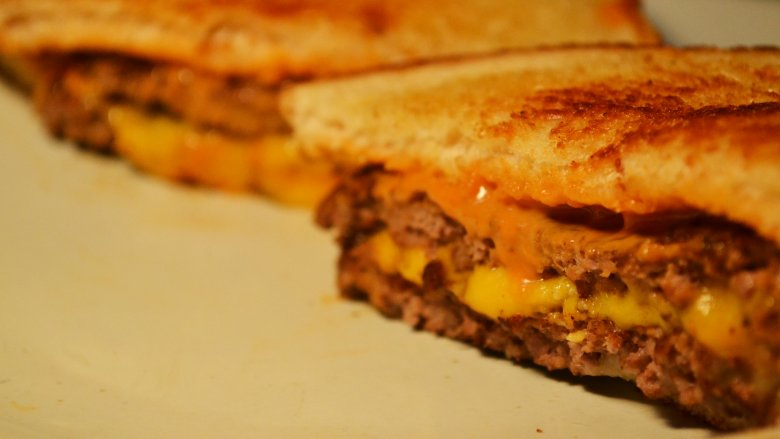

Steak 'N Shake Frisco Melt

Description
If you're a big fan of fast food and if you've ever thought about making Steak 'n Shake's Frisco Melt,
then this recipe is for you!
Ingredients
- 1/2 cup thousand island dressing
- 1/4 cup french dressing
- Two splashed (about 1/8 of a teaspoon) of worcestershire
- 9.5 oz ground round
- 4 oz ground sirloin
- 2 oz ground t-bone steak
- 2 tablespoons margarine
- 4 slices sourdough bread
- 2 slices american cheese
- 2 slices swiss cheese
Directions
- Combine dressings, ketchup and worcestershire sauce in a medium bowl. Refrigerate for at least 30 minutes
- Mix the meats together by hand and refrigerate for 10-30 minutes
- Create four, approximately 3-oz patties, formed into a hockey puck shape
- Spread margarine on two pieces of sourdough bread margarine side down on a 325 degree farenheit surface (4 on youtr stovetop)
- Place a slice of swiss cheese on one piece of bread in the pan
- Cook two meat patties on a 375 degree farenheit flat top or pan (6 on your stove top).
Gently press the top of each, cook for 30 seconds, flip and press with a solid spatula
Cook for 1-2 minutes then flip again
- Stack a cooked burget on top of each piece of melted swiss, followed by a piece of american cheese and the second patty
- Move everything to a plate, top burger stack with plain toasted bread with lots of frisco sauce
- Top with sauced-bread, cut at an angle, and enjoy!